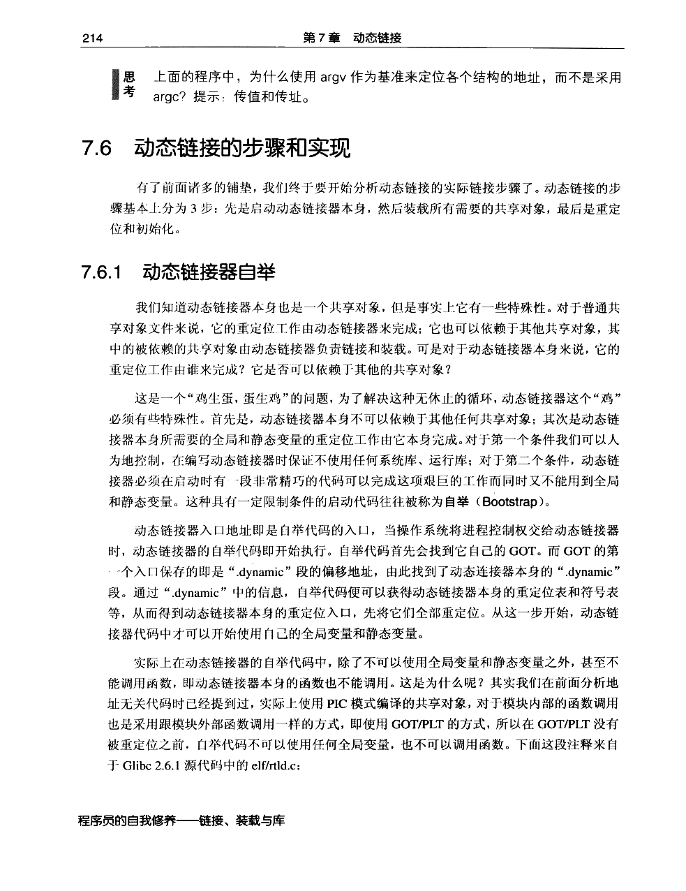
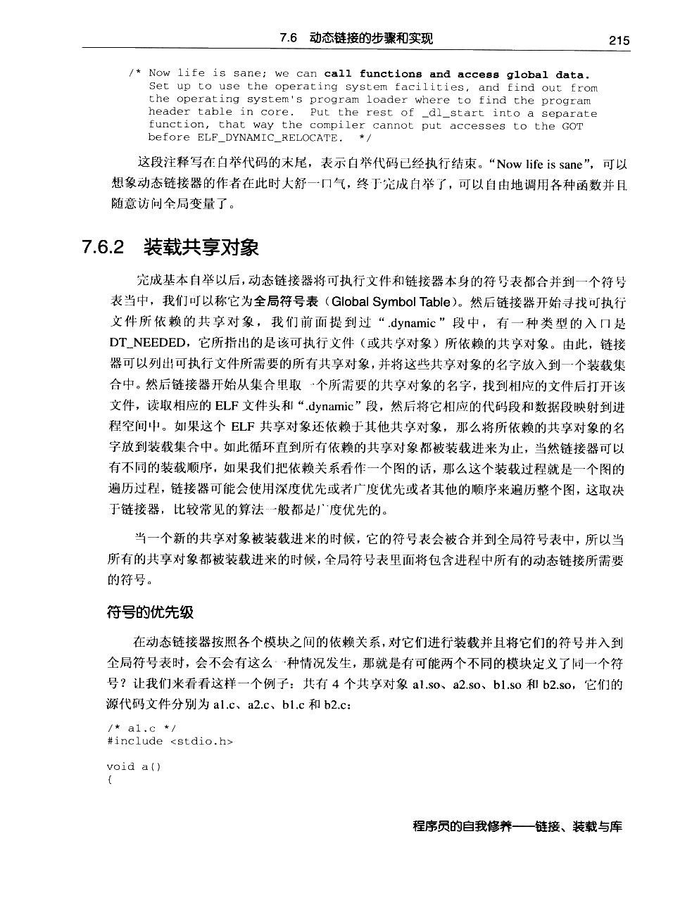
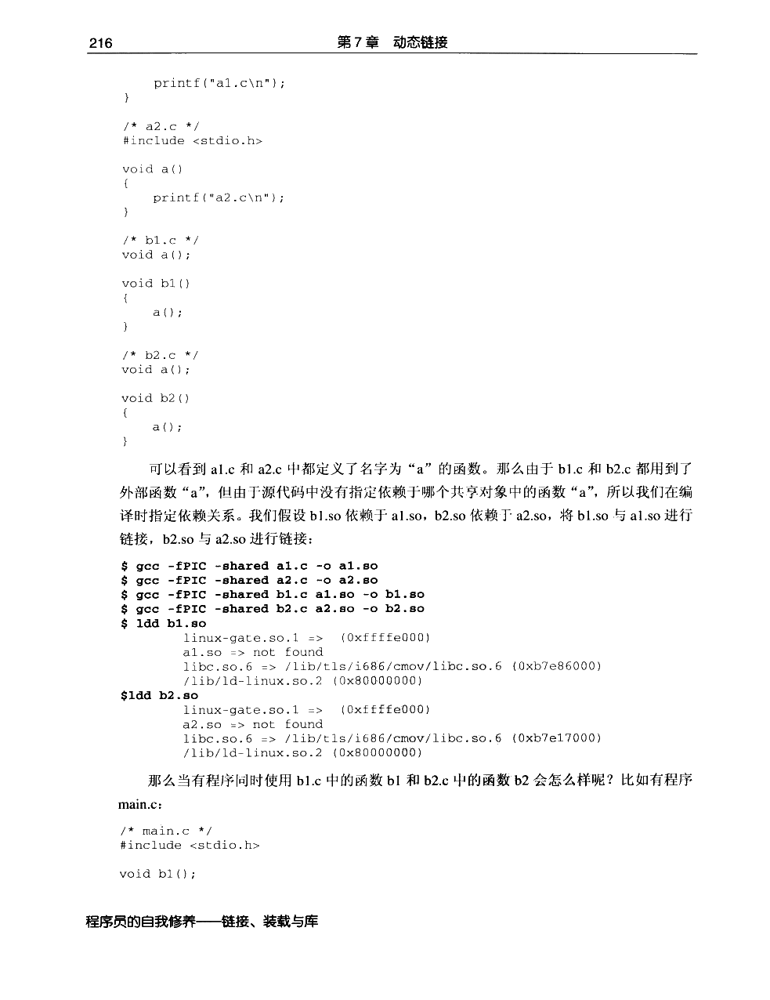
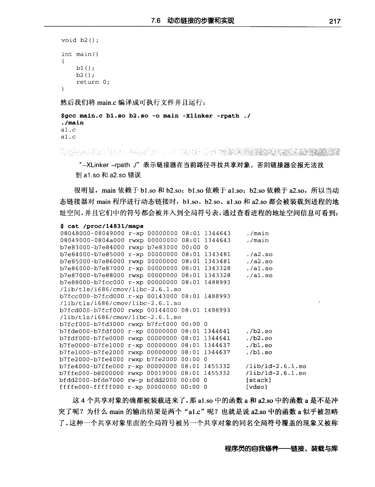
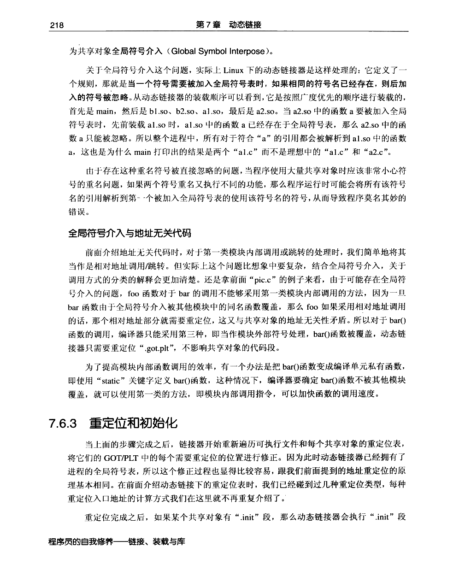
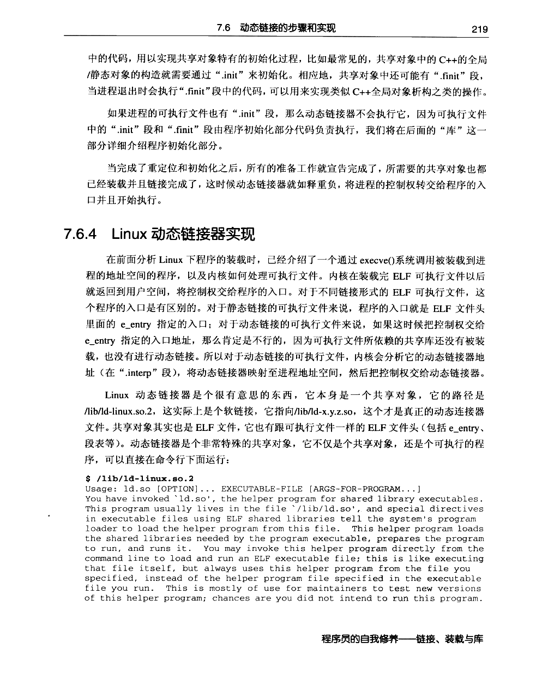
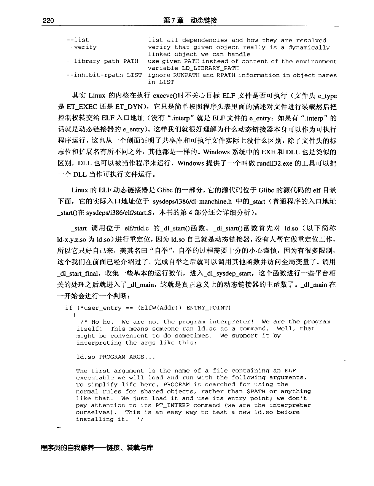

← 返回正文7.6 动态链接的步骤和实现
PDF 第 237 页 · 书内第 214 页
PDF 第 238 页 · 书内第 215 页
PDF 第 239 页 · 书内第 216 页
PDF 第 240 页 · 书内第 217 页
PDF 第 241 页 · 书内第 218 页
PDF 第 242 页 · 书内第 219 页
PDF 第 243 页 · 书内第 220 页
PDF 第 244 页 · 书内第 221 页